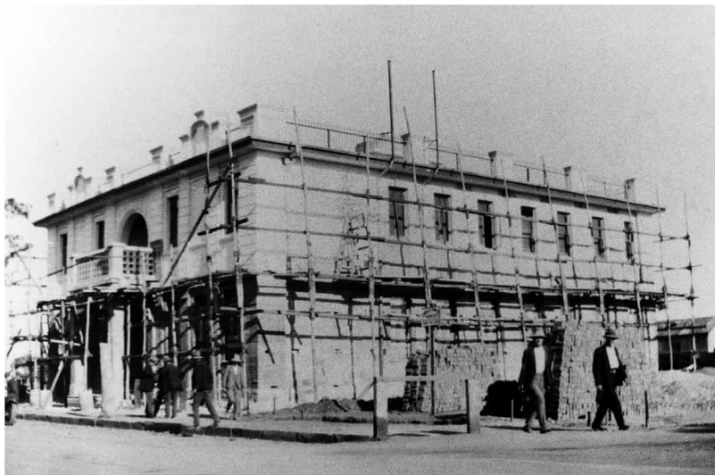
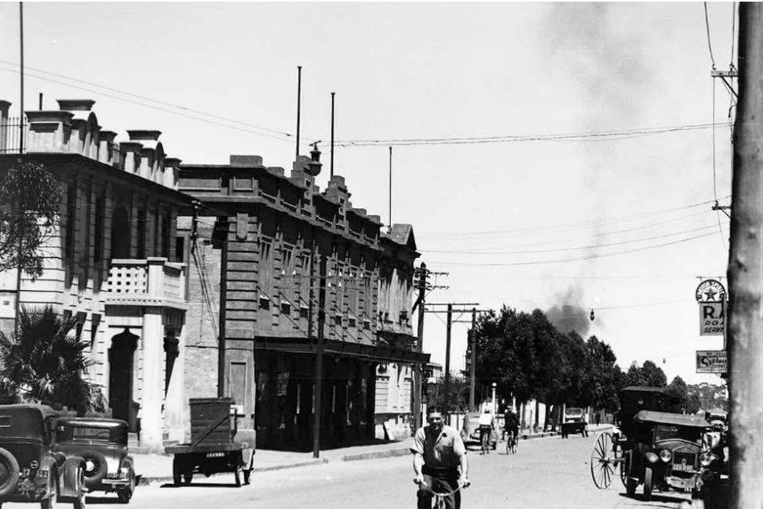
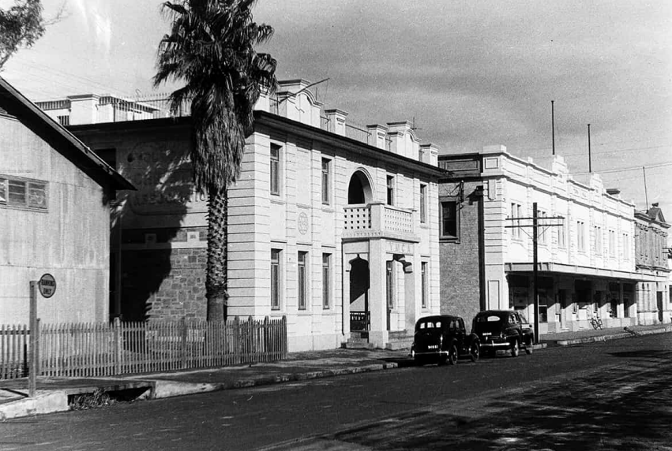

Y.M.C.A
On Saturday 18th April Mr J. T. Massey, secretary of the Y.M.C.A. in Adelaide addressed a gathering of returned soldiers regarding establishing a branch of the Y.M.C.A. in Peterborough. “Mr. Massey left for Adelaide by the express on Tuesday morning, 'firmly convinced that the establishing of a Y.M.C.A. in Peterborough would be of incalculable benefit to the young men of this town. He wished the writer of this article to state that if sufficient inducement were offered by the citizens of this town, and an invitation were extended to his Association to establish a Y.M.C.A, in Peterborough, he would do his best to serve their interests.” – The Times - Friday 24 April 1925.
A further meeting was held on Sunday 25th October in the town hall. Present were a representation of railway men and others interested in the establishment of a Y.M.C.A. in the town. Mr F. Yeomans (divisional superintendent) occupied the chair along with Mr Massey and National Secretary Mr W.F. Woodcraft. “A resolution was unanimously adopted that all present express their approval of the proposed scheme and their willingness to do all in their power to ensure its realisation. A committee was formed to consider ways and means of securing financial support from railwaymen.” - The Times - Friday 23 Oct 1925.
A site near the town hall had been provided by the Railway Commissioner for the building of a Y.M.C.A. in Peterborough. The proposal included a two storey building with scores of bedrooms for young men away from home, lounge hall, small lecture hall, billiard room, dining hall and quarters for a resident trained secretary: also a gymnasium. Over £1500 had been promised in donations from the businessmen of the town. The council moved that no rates would be charged on the property and that electric current would be provided free.
A gala day was planned and on Friday 11th June, His Excellency the Governor (Sir Tom Bridges) accompanied by Lady Bridges and Miss Bridges were met at the station by the Mayor and Mayoress (Mr and Mrs W. C. Reed) and Mr Frank Yeomans (Railway Superintendent) when they arrived at Peterborough on for the laying of the foundation stone of the Y.M.C.A building. The visiting party were given a tour of the Public School, where he addressed the children and then gave them the rest of the day off, and then driven to the top of the hill behind the school for a view of the town.
A large crowd sheltered under shop verandahs for the laying of the foundation stone and then owing to the wet weather, the proceedings were adjourned to the Capitol Theatre.
The official party were accompanied to the new railway constructions before a luncheon of about 80 in the town hall. They were then motored to the hospital for an inspection before leaving for Broken Hill on a special train at 3.30pm.
Plans for the new Y.M.C.A. building were published in the Advertiser on Wednesday 22nd December. The building was described as the most modern of its kind in Australia, outside the capital cities.
“The site will have a frontage of 180 ft. to the main street. The main building will be a two-storied one, with a flat roof, and a small basement. There will be a spacious reception hall, the full width of the building with two fireplaces. In two corners of this hall will be rooms, also with fireplaces, for returned soldiers and members of the Railways Institute respectively. In another corner will be the general office. From this hall at either end the dining and billiards rooms will be entered through double swinging doors. The gymnasium will be reached from the reception hall by double doors. On the first-floor accommodation will be provided for 30 residents, with a social room for their use, and a flat for the secretary and hie wife. Adjoining the gymnasium will be a tennis court, and provision has been made for a swimming pool. The building will be electrically lit, and hot and cold water will be provided throughout.” - The Advertiser (Wed 22 Dec,1926)
Building commenced and by April 1927 the exterior of the had been completed.
The opening of the Y.M.C.A. building was held on Thursday 19th May. A large crown gathered to see the Mayor, Mr Edward Hoile open the doors and hand over the building to the local board. The building had been handed over free of debt by the National Committee of the Y.M.C.A. and this was largely due to the generous treatment given by the Commissioner of Railways and their officials. The sum of £3,000 had been raised by local subscriptions from Peterborough and the Burra district had also contributed. Afternoon tea was available and a reception was held in the evening for the men of the town.

Y.M.C.A. under construction - 1927
Photo – Lionel Noble Collection

Y.M.C.A. and Town Hall – c.1940s
Photo – Lionel Noble Collection

Y.M.C.A. and Town Hall – c. 1950
Photo – Lionel Noble Collection